Casi todas las opciones de configuración de Firefox se encuentran en la página de opciones de Firefox, que está dividida en ocho secciones: General, Buscar, Contenido, Aplicaciones, Privacidad, Seguridad, Sync y Avanzado. Se comentan aquí algunas de esas opciones.
Página de opciones
Desde Firefox 38 (publicado en mayo de 2015), la página de opciones tiene un nuevo diseño. La página de opciones se puede abrir de varias maneras:
mediante el menú Herramientas > Opciones (para mostrar el menú hay que pulsar la tecla Alt):
haciendo clic en el botón "Abrir menú" de la barra de dirección y eligiendo la opción Opciones:
escribiendo en la barra de dirección la dirección about:preferences y pulsando Intro:
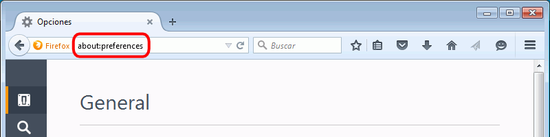
La página de opciones tiene ocho secciones que se abren haciendo clic en los iconos de la parte izquierda y que se comentan en los apartados siguientes de esta lección.
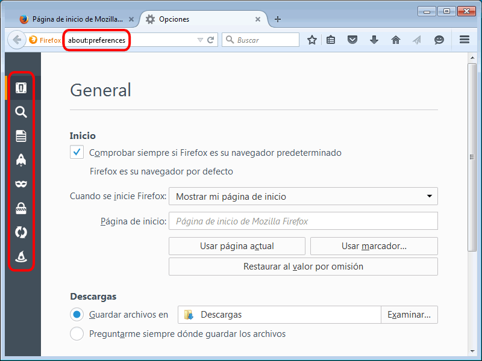
Opciones > General
En esta sección se puede configurar la página de inicio, la ubicación de la carpeta de descargas y el funcionamiento de las pestañas.
La forma más sencilla de configurar una página de inicio determinada es abrir primero la página en Firefox y a continuación abrir la página de opciones y hacer clic en el botón "Usar página actual" de esta sección.
Si se quiere configurar como página de inicio un conjunto de páginas abiertas en pestañas, el procedimiento es el mismo: abrir las páginas, abrir la página de opciones y hacer clic en el botón "Usar páginas actuales.
Opciones > Buscar
En esta sección se puede modificar el buscador predeterminado, modificar el orden de los buscadores o añadir o eliminar buscadores:
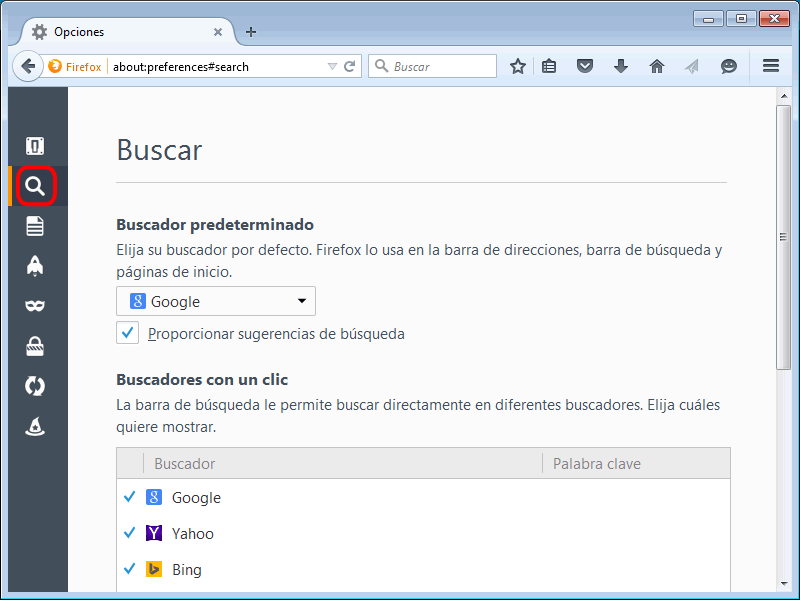
Opciones > Contenido
En esta sección se recomienda no desmarcar la casilla "Bloquear ventanas emergentes". Firefox no consigue bloquear todas las ventanas emergentes, pero sí gran parte de ellas. Extensiones como Adblock Plus mejoran Firefox en ese aspecto.
En esta sección se puede cambiar el tipo de letra predeterminado. Más concretamente lo que se cambia es el tipo de letra asociado a la familia serif. En la lección Configuración avanzada de Firefox se comenta cómo modificar el tipo de letra predeterminado del resto de familiars de fuentes.
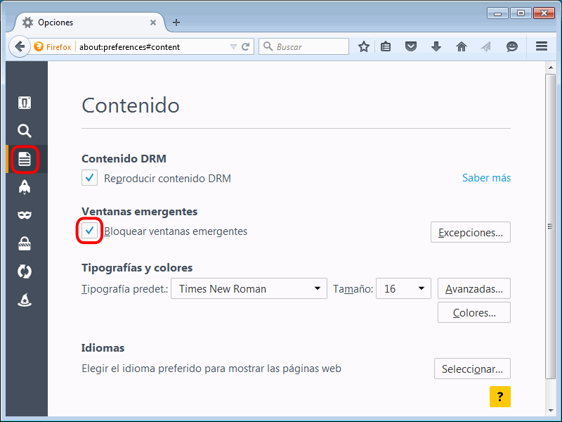
Opciones > Aplicaciones
En esta sección se puede configurar qué programa gestiona cada tipo de archivo (programa externo, plug-in de Firefox o el propio Firefox).
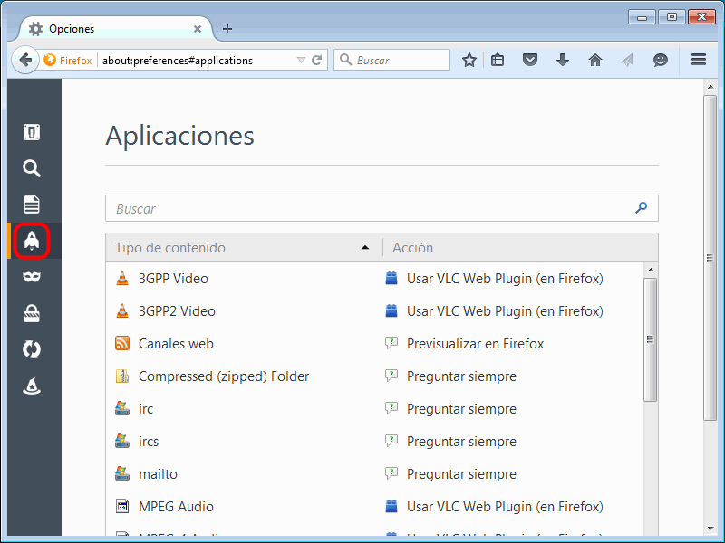
Por completar: Se podría añadir aquí cómo cambiar el visor de archivos PDF
Opciones > Privacidad
En esta sección se puede configurar el rastreo, el historial de páginas visitadas, el manejo de cookies y de datos privados.
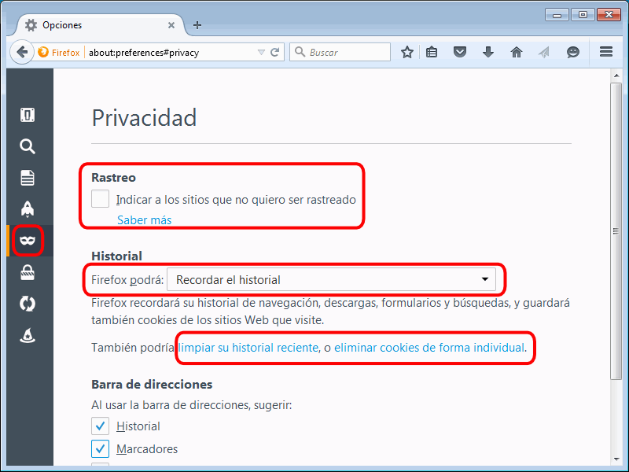
Las preferencias de rastreo indican a Firefox si informar a los sitios del deseo del usuario de no ser identificado mediante cookies. Se puede consultar más información sobre esta posibilidad, llamada Do Not Track, en la lección Historia de la web: otros.
Las preferencias de Historial permiten indicar a Firefox la información que se conserva al cerrar Firefox (historial de navegación y descargas, sesiones activas, formularios, búsquedas, cookies, cachés, contraseñas, preferencias de los sitios, datos de sitios web sin conexión, etc.).
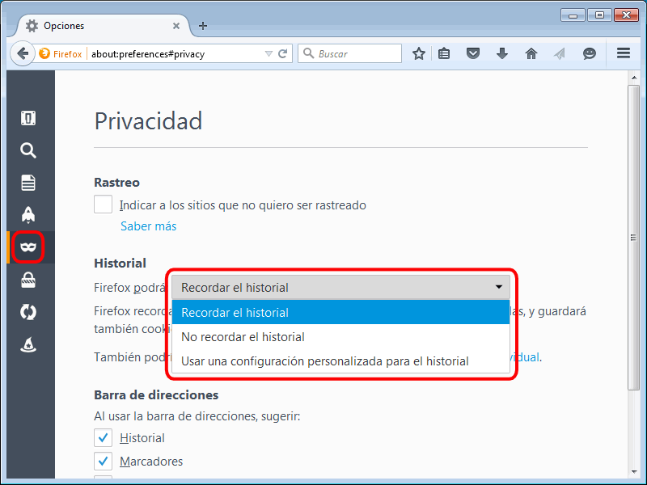
La opción "Usar una configuración personalizada para el historial" permite especificar el comportamiento de Firefox con cada tipo de elemento relacionado con el historial.
El historial o las cookies pueden borrarse en cualquier momento haciendo clic en los enlaces "Limpiar su historial reciente..."o "eliminar cookies de forma individual". Se puede además elegir exactamente qué datos se quieren borrar y con qué antigüedad.
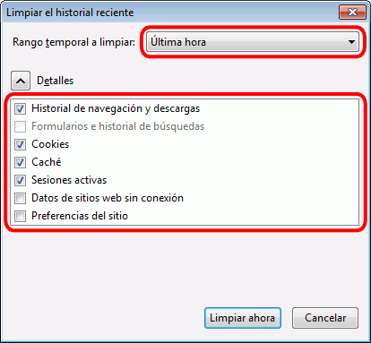
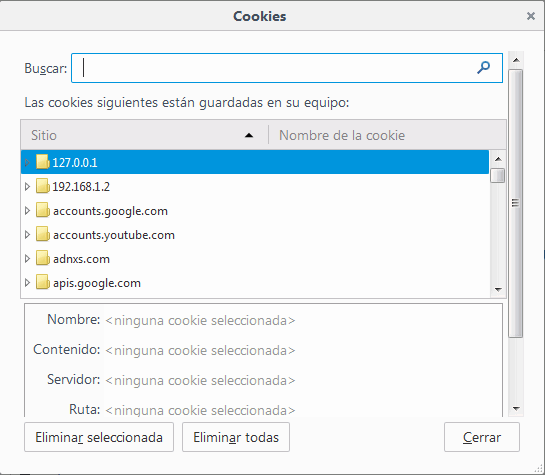
Opciones > Seguridad
En esta sección se configuran las opciones relacionadas con las seguridad: sitios que intentan instalar aplicaciones, sitios que simulan ser otros, contraseñas almacenadas, etc.
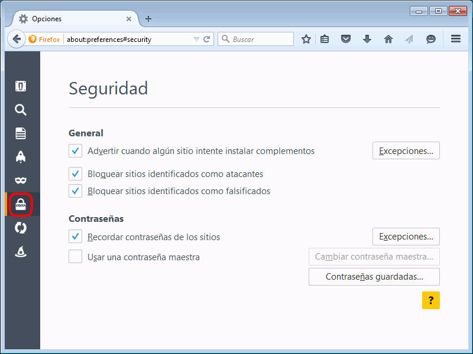
Opciones > Sync
En esta sección se configuran las opciones relacionadas con Firefox Sync, un servicio de la Fundación Mozilla que permite sincronizar los marcadores, el historial de navegación, las contraseñas o las pestañas abiertas para utilizarlos en varios ordenadores.
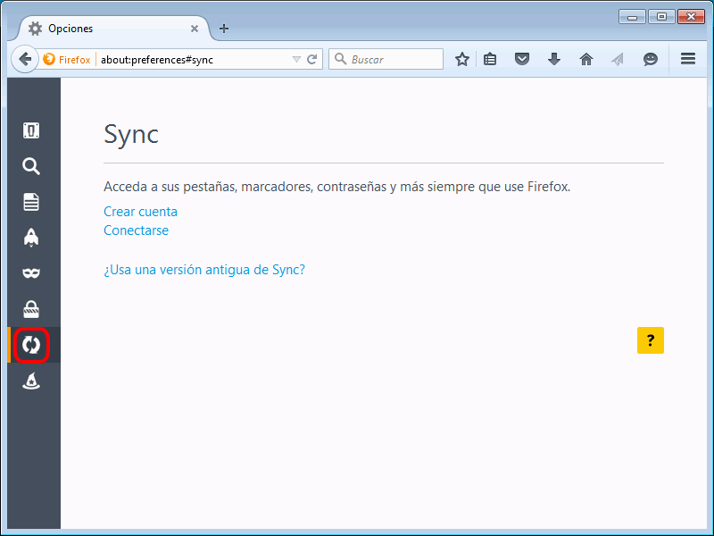
Opciones > Avanzado
Esta sección está dividida en varios grupos.
En el grupo General, yo recomiendo cambiar dos o tres opciones:
marcar la casilla "Buscar texto mientras se escribe", que efectúa automáticamente búsquedas en la página al teclear caracteres.
desmarcar la casilla "Usar desplazamiento automático", que funciona pulsando con el botón central en una página larga.
(opcional) marcar la casilla "Usar desplazamiento suave"
Zoom
Para aumentar, reducir o devolver al tamaño original una página web, se puede:
Utilizar los atajos de teclado Ctrl++, Ctrl+- y Ctrl+0, respectivamente
Utilizar las opciones de menú Ver > Tamaño > Aumentar / Reducir / Inicio:
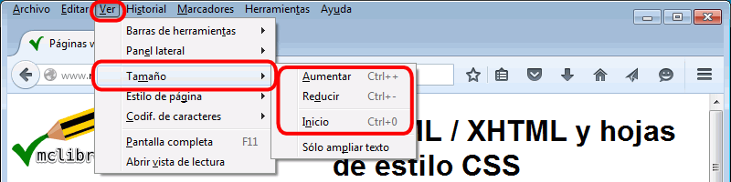
Pero hay que tener en cuenta que Firefox dispone de dos tipos de zoom:
Ampliar todo, que amplia o reduce proporcionarlmente todos los elementos de la página (texto, imágenes, etc.)
Sólo ampliar texto, que amplia o reduce sólo el tamaño de letra sin modificar el resto de elementos (imágenes, etc.)
Para elegir entre un tipo u otro de zoom, hay que marcar o desmarcar la opción de menú Ver > Tamaño > Sólo ampliar texto:
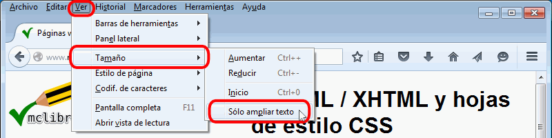
El resultado es el siguiente:
Sin ampliar, la página se ve a su tamaño natural:
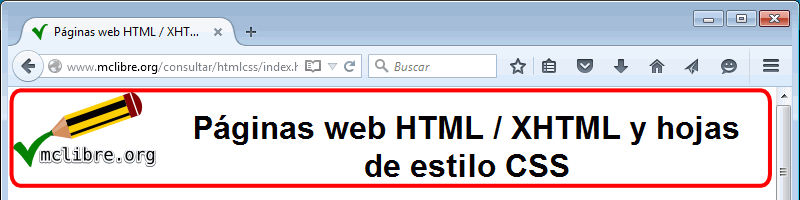
Si la opción Ampliar sólo texto sí está marcada, al ampliar se amplía el texto, pero la imagen conserva su tamaño:
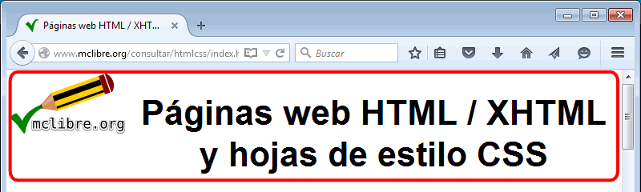
Si la opción Ampliar sólo texto no está marcada, al ampliar se amplía tanto el texto como la imagen:
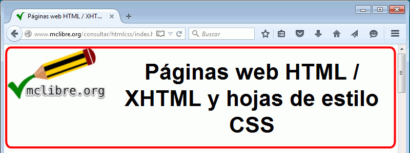
Nota: Este tipo de zoom es el que aplican Google Chrome e Internet Explorer.